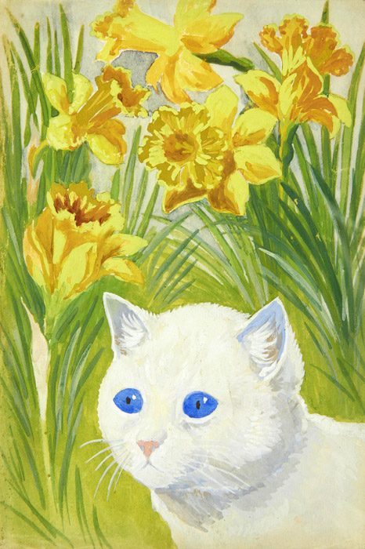

作品名 「水仙の間の猫」
花言葉 「ナルシスト」「自己愛」「うぬぼれ」
水仙
「ナルシスト」
花の咲く時期とそのラッパのような見た目から、“春を告げる花”とも言われています。水仙の学名は「ナルキッソス」と言います、これはギリシャ神話に登場する美少年ナルキッソスにちなんで名付けられたものです。神話のナルキッソスは、池の水に映る自分の美しい容姿に恋して水に抱きつき、池に落ちて死んだとされ、また、落ちた場所の近くに水仙が咲いていたとも言われ「ナルシスト」の語源になりました。
水仙の間の猫
ルイス・ウェイン
ルイス・ウェインは猫を対象とした作品で知られるイギリスの画家、イラストレーター。晩年には統合失調症を患い、作品中にその痕跡をたどることができる。ルイスは抽象表現主義とカラフルな色彩を特徴とする作品を制作した。また、ルイスは多作な画家として知られており、以後30年間で残した作品は数百にも上ると見られる。100あまりの児童書の挿絵を執筆し、新聞、専門誌、雑誌と様々な場所で作品が掲載された。1901年から1915年には"ルイス・ウェイン年鑑"なる書籍が発売されている。
| 作品名 | 水仙の間の猫 |
| 作者 | ルイス・ウェイン | 所蔵 | 不明 |